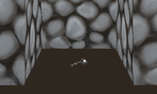
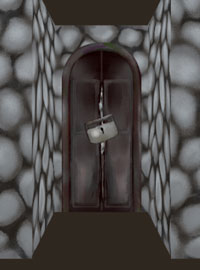
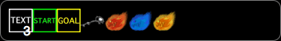

疑似3Dで表示されたダンジョン風迷路を解くゲームです。最初は簡単な迷路からスタートし、迷路を解く事でレベルが上がっていき、より難しい迷路に挑戦できます。すべての迷路をクリアして、あるアイテムを手に入れると、ダンジョンキングの称号が手に入ります。
迷路を解くと経験値を獲得し、レベルが上がっていきます。レベルが上がると、挑戦できる迷路が増えていきます。一度クリアした迷路をもう一度クリアしても経験値は入りません。
クリア済みの迷路はCLEARと表示されます。クリアできなかった迷路にはFAILEDと表示されます。まだ挑戦していない迷路には何も表示されません。
疑似3Dで表示された迷路の中で、ゴール地点を探します。ゴールは梯子で表示されます。ゴールに到達するとクリアです。
迷路の中には扉や鍵付きの扉、鍵、ゴーストなどが登場し、レベルが上がるほど複雑になり、難しくなっていきます。
キーボードまたはマウス等のポインティングデバイスで操作できます。
カーソルーキーで移動します。↑キーで前進、←キー、→キーで向きを変えます。
スペースキーで扉の開閉、鍵を外す、1回待機などの行動をします。
マウスで操作する場合は画面に表示されている矢印をクリックします。
矢印がキーボードのカーソルキーに対応しています。
中央の四角形がキーボードのスペースキーに対応しています。
EXITをクリックして、迷路の途中でやめることが出来ます。
途中でやめた後、もう一度挑戦する場合、スタート地点からやり直しになります。
迷路の中にはゴーストが登場します。あなたが1マス移動する毎に、ゴーストも1マス移動します。扉の開閉や鍵を外す動作でも、ゴーストが移動します。ゴーストとぶつかると、スタート地点からやり直しになります。やり直しは何回でも出来ます。
扉の直前で扉の方を向いてスペースキーを押すと扉を開けます。開いた扉の前でスペースキーを押すと扉を閉じます。扉の開閉は何回でもできます。
迷路の中には鍵のかかった扉が存在します。鍵は迷路の中に落ちています。
鍵を外すには、鍵のかかった扉の前でスペースキーを押します。鍵を外すと普通の扉になります。もう一度スペースキーを押して扉を開けます。一度鍵を外した後は、何回でも開閉できます。
 レベルが上がると自分の迷路が作成出来るようになります。最初は小さな迷路しか作れませんが、レベルが高くなると大きなサイズの迷路が作れるようになり、配置できる鍵やゴーストの数が増えます。
作成した迷路は友人同士で挑戦できます。
迷路を作成するにはメニューで 迷路をつくる > 新しく迷路をつくる と選択します。Untitledという迷路が追加されるので、クリックすると編集画面になります。
迷路の大きさは、作成したときのレベルで自動で決まります。レベルが高いほど大きい迷路になります。
「マップ保存」をクリックすると、編集した内容を保存します。自分で挑戦する前に保存してください。保存しないで挑戦したり、他の画面に移動した場合、編集内容は失われてしまいます。
作成した迷路は自分で挑戦してクリアすると、ステータスが作成中から公開中に変わります。公開中の迷路は、友人に挑戦してもらうことが出来ます。
公開中の迷路を更新すると、作成中に変わり、友人が挑戦できなくなります。
マップの中の、四角い点と点の間をクリックすると、壁や扉を配置できます。クリックする度に色が変わります。
| 薄い灰色 | 壁 |
| 濃い灰色 | 開いた扉 |
| オレンジ | 閉じた扉 |
| 赤 | 鍵のかかった扉 |
鍵のかかった扉は、配置してある鍵の数しか配置できません。鍵のかかった扉を配置した後、別の場所に変更する場合は、既に配置してある鍵のかかった扉を削除してから行います。
ゴーストや鍵などをシンボルと呼びます。シンボルを配置するには、作成中のマップのマスの中に、配置したいシンボルをドラッグします。
配置してあるシンボルを削除するには、削除したいシンボルを、シンボルが元あった四角形の枠の中にドラッグして戻します。
スタート地点は、必ず配置する必要があります。
配置した後、クリックすると、スタート時のプレーヤーの向きを変更できます。
配置した後、ダブルクリックすると、スタート時に表示されるメッセージを設定できます。
ゴール地点は、必ず配置する必要があります。
配置した後、ダブルクリックすると、ゴール時に表示されるメッセージを設定できます。
レベルが上がると配置できるゴーストの数が増えます。
配置してあるゴーストをクリックすると、スタート時のゴーストの向きを変更できます。
レベルが上がると鍵を配置できるようになります。鍵を配置すると鍵のかかった扉を配置できます。
ポップアップ表示されるメッセージを配置できます。メッセージは複数個、配置できます。レベルがあがると配置できるメッセージの数が増えます。
配置してあるメッセージをダブルクリックすると、メッセージの内容を編集できます。
一般的な家庭用PCとブラウザで動作します。特別なソフト、プラグインは必要ありません。（Internet Explolerでの動作にはSilverlightのインストールが必要です。）
下記環境で動作を確認しています。OS、ブラウザは最新のバージョンを推奨します。
Internet Explorer 6、Operaには対応していません。
Internet Explolerでの動作にはSilverlightのインストールが必要です。Silverlightはマイクロソフトの開発しているプラグインです。マイクロソフトのサイトで無料で手に入ります。
※上記対応OS、ブラウザでも動作の保証をするものではありません。